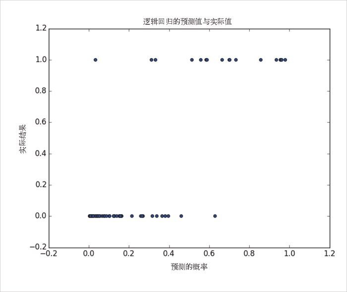

16.4 拟合优度
目前为止，我们还没有使用留出来的测试数据。下面来看看，如果我们预测成为付费用户 的概率大于 0.5 的话会发生什么：
true_positives = false_positives = true_negatives = false_negatives = 0
for x_i, y_i in zip(x_test, y_test):
predict = logistic(dot(beta_hat, x_i))
if y_i == 1 and predict >= 0.5: # TP: 是付费用户，且我们预测为是
true_positives += 1
elif y_i == 1: # FN: 是付费用户，且我们预测为否
false_negatives += 1
elif predict >= 0.5: # FP: 非付费用户，且我们预测为是
false_positives += 1
else: # TN: 非付费用户，且我们预测为否
true_negatives += 1
precision = true_positives / (true_positives + false_positives)
recall = true_positives / (true_positives + false_negatives)
这里的查准率为 93%（即每预测 100 次有 93 次是正确的），查全率为 82%（即每 100 个付费用户中，我们能够预测出 82 个人），这两项指标都相当不错。
在图 16-4 中，我们给出了系统的预测值与实际值的比较情况，图中表明该模型的表现非常好：
predictions = [logistic(dot(beta_hat, x_i)) for x_i in x_test]
plt.scatter(predictions, y_test)
plt.xlabel("predicted probability")
plt.ylabel("actual outcome")
plt.title("Logistic Regression Predicted vs. Actual")
plt.show()

图 16-4：逻辑回归的预测值与实际值